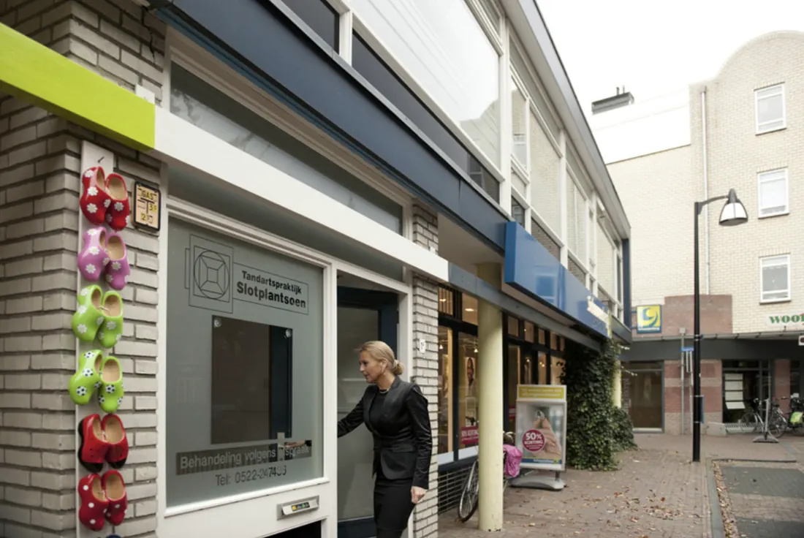
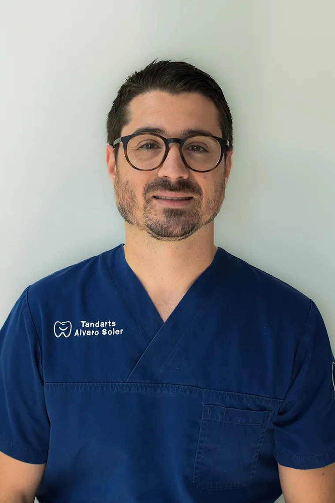
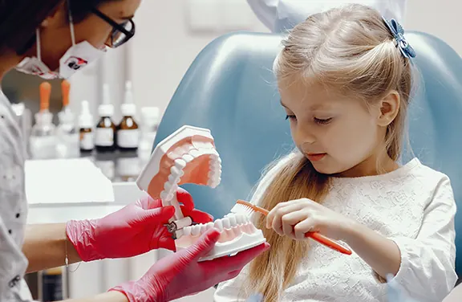
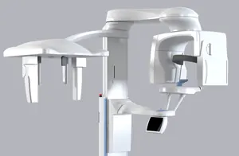
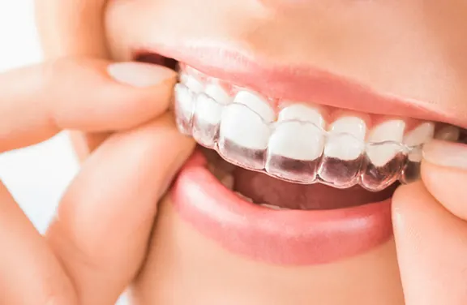

Uw glimlach verdient
vertrouwen.
Tandarts in het hart van Meppel. Nieuwe patiënten zijn welkom.
Alle zorg voor uw gebit, onder één dak in Meppel.
Tandartspraktijk Slotplantsoen is een klantgerichte praktijk voor algemene tandheelkunde, esthetiek, orthodontie en implantologie. Preventie krijgt bij ons een belangrijke plek: liever voorkomen dan genezen.
Tandartsen, preventieassistenten, tandprothetici en een tandtechnieker werken hier samen. Zo hoeft u voor een 3D-scan, een nieuwe kroon of de reparatie van uw prothese niet ergens anders heen.


Voor groot en klein, en voor wie het spannend vindt.

Kinderen en de tandarts
Vanaf twee jaar mag uw kind mee om rustig te wennen. Op een speelse manier bouwen we vertrouwen op, en twee controles per jaar is meestal genoeg.
Tips voor oudersU bepaalt het tempo. Wij nemen de tijd en leggen alles vooraf uit.
Bang voor de tandarts? U bent niet de enige. Met een rustige ontvangst, eigen muziek en een afgesproken stopteken maken we het u zo makkelijk mogelijk.
Angst voor de tandarts
3D CBCT-scan in huis
Minder straling dan een gewone CT-scan en direct een betrouwbaar 3D-beeld. Ook voor verwijzende tandartsen.
Over de CBCT-scan
Invisalign: rechte tanden, onopvallend
Doorzichtige, uitneembare aligners die uw tanden stap voor stap verplaatsen. Begeleid door onze tandarts voor orthodontie.
Meer over InvisalignOns team
Vertrouwde gezichten: veertien collega’s die elke dag klaarstaan voor uw mondgezondheid, van tandarts tot tandtechnieker.


Nieuwe patiënten
In drie stappen patiënt bij ons.
Schrijf u in
Vul het online formulier in, voor uzelf of het hele gezin. Het duurt twee minuten.
U krijgt een uitnodiging
We verwerken uw inschrijving en nodigen u uit voor een eerste consult.
Eerste consult
Kennismaking, medische vragenlijst, een grondig onderzoek van gebit en tandvlees en zo nodig digitale röntgenfoto’s.
4,3 van 5 gemiddeld in 29 Google-reviewsLees de reviews op Google
Contact en openingstijden
Kom langs aan het Slotplantsoen 1a, midden in Meppel.
- Telefoon
- 0522-247436Ma t/m do 08:30-12:30 en 13:30-16:30 uur. Tussen 12:00 en 13:30 uur alleen bereikbaar op 06-27443039.
- Maandag08:00-12:3013:15-20:00
- Dinsdag08:00-12:3013:15-16:45
- Woensdag08:00-12:3013:15-16:45
- Donderdag08:00-12:3013:15-16:45
- VrijdagGesloten
- ZaterdagGesloten
- ZondagGesloten
Gratis intake
Twijfelt u over een beugel, Invisalign of een nieuw (klik)gebit? Tijdens een gratis intake bekijken we uw situatie en hoort u eerlijk wat er mogelijk is, zonder verplichtingen.
Pijn of spoed? Bel tijdens openingstijden bij voorkeur tussen 08:30 en 10:00 uur, dan proberen we u dezelfde dag te helpen. Wat te doen buiten openingstijden
Slotplantsoen 1a, Meppel
De kaart wordt geladen via Google Maps. Daarbij kan Google gegevens verwerken.